Human-Carrying eVTOL: Landing Gear System
- Organization: VTOL @ Berkeley (President & Lead Mechanical Engineer)
- Relevant Skills: SolidWorks, Fusion 360, Composite Structures, Landing Load Analysis, FEA, FAA Load Case Interpretation, Carbon-Fiber Layup, Additive Manufacturing, Mechanical Integration
Background
As President and Lead Mechanical Engineer of VTOL @ Berkeley, I directed mechanical development for Berkeley's first human-carrying eVTOL aircraft. My work centered on the landing gear architecture: a lightweight composite skid system sized for touchdown loads, ground handling, and integration with the primary airframe. The design had to balance stiffness, impact absorption, manufacturability, and mass efficiency, all of which directly affect thrust margin and flight endurance on an electric aircraft.
Goals
- Translate FAA-relevant landing load cases into component-level force and moment requirements
- Validate skid tubes, clamps, and airframe interfaces under vertical impact and lateral ground loads
- Reduce structural mass while maintaining adequate factors of safety for piloted operation
- Design interfaces that preserve airframe alignment, serviceability, and compatibility with tiltrotor hardware
Design and Execution
- Landing Gear Skid Design:
- Designed a carbon-fiber skid layout to distribute touchdown loads through the main airframe while keeping the contact patch stable
- Developed custom clamp geometry for transferring skid-tube reaction loads into the fuselage structure without crushing the composite tubes
- Prototyped compliant edge socks to tune ground contact behavior, reduce stress concentration, and protect skid ends during touchdown
- Used 3D-printed scale hardware to verify envelope, fastener access, and assembly sequence before committing to composite fabrication
- Structural Analysis and Optimization:
- Calculated hard-landing load cases including 4G vertical acceleration and off-axis touchdown scenarios
- Performed FEA in SolidWorks and Fusion 360 to evaluate clamp stress, skid deflection, and interface reaction forces
- Iterated composite layup assumptions and bracket geometry to remove unnecessary material from low-stress regions
- Reduced landing gear mass by approximately 15%, improving aircraft thrust-to-weight margin
- Manufacturing and Integration:
- Fabricated composite components with layup methods selected for directional stiffness and impact tolerance
- Printed and test-fit mounting brackets, clamp prototypes, and interface pieces to converge on assembly tolerances
- Designed arm mounts and landing gear attachment points around load path continuity into the fuselage
- Used ground-fit checks and static loading to verify contact geometry, clearance, and structural response
Outcome
- Delivered an integrated composite landing gear concept for a human-carrying eVTOL airframe
- Reduced landing gear structural mass by approximately 15% through geometry and layup iteration
- Validated clamp and skid performance against hard-landing load cases using FEA-backed design reviews
- Improved thrust-to-weight margin by reducing non-propulsive structural mass
- Produced flight-configuration hardware and interfaces compatible with the broader tiltrotor aircraft assembly
Image Gallery (Click to zoom):
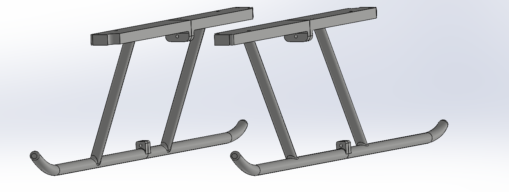
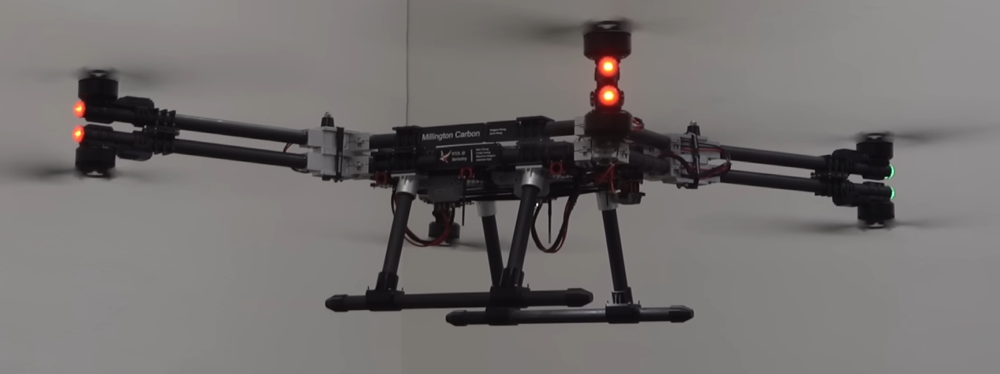
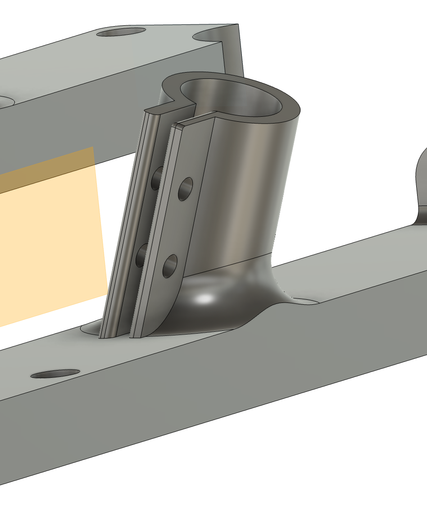
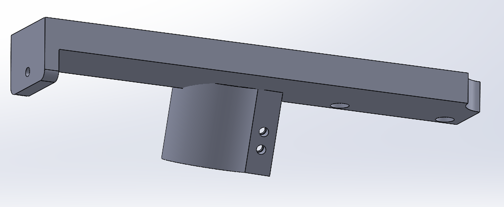
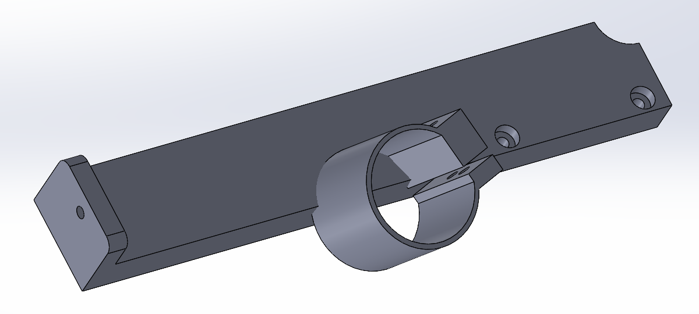
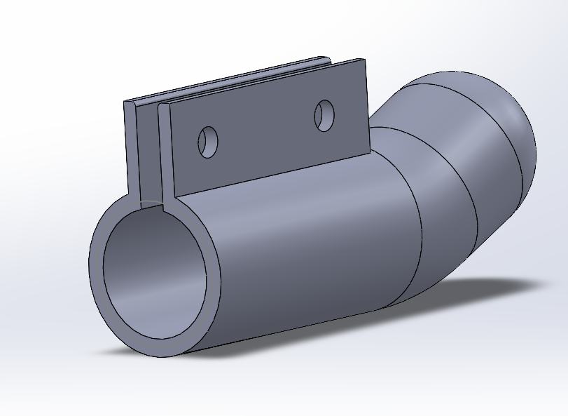
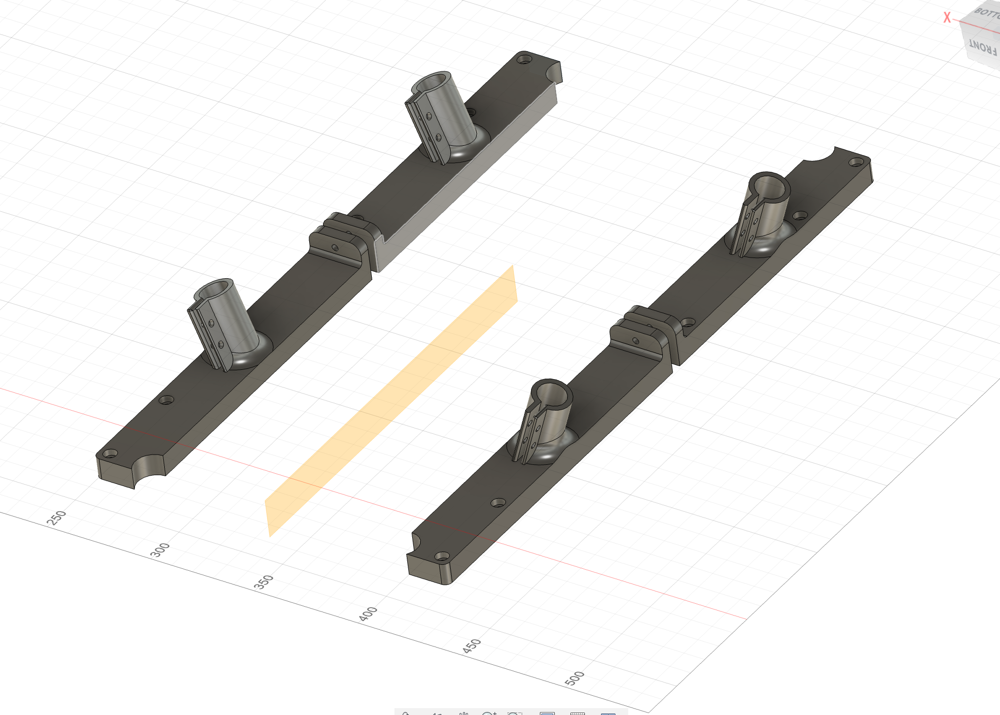
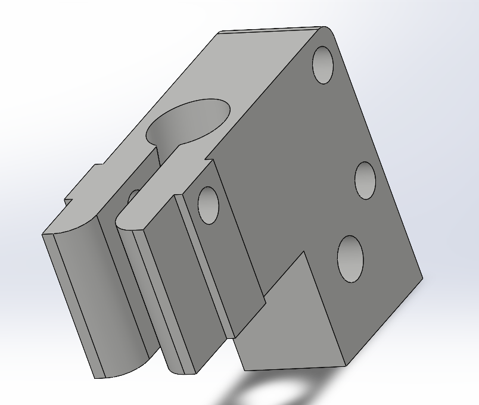
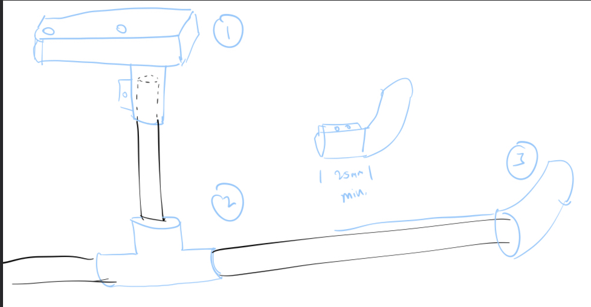
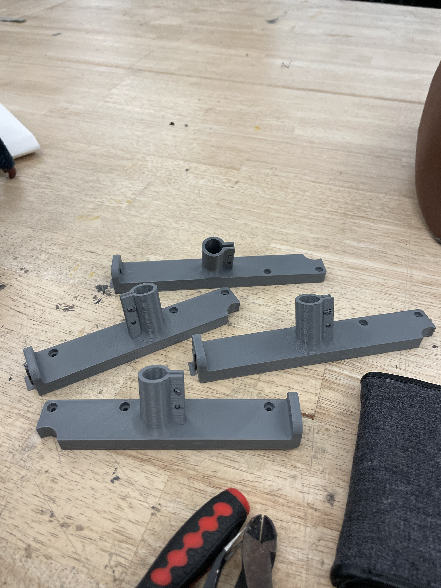
Custom Tiltrotor UAV
- Relevant Skills: Airframe Architecture, Tiltrotor Mechanism Design, Ansys CFD, ArduPilot VTOL Configuration, Servo Linkage Design, Carbon-Fiber Spars, PLA Aero Additive Manufacturing, Flight Testing
Background
Tiltrotor UAVs combine the hover authority of a multirotor with the cruise efficiency of a fixed-wing aircraft. I led the mechanical and aerodynamic design of a custom trimotor tiltrotor UAV with two servo-actuated front propulsion units and one fixed rear motor. The project required airframe sizing, motor placement, tilt-axis packaging, control-surface integration, and structural design for a lightweight aircraft capable of controlled hover-to-cruise transition.
Goals
- Define an airframe geometry that balances hover stability, cruise lift-to-drag performance, and manufacturability
- Package tilting propulsion units to minimize rotor wake interference with the wing and tail surfaces
- Integrate control surfaces, servo linkages, and ArduPilot parameters for repeatable transition behavior
- Fabricate a lightweight structure using printed aerodynamic shells and carbon-fiber primary load paths
Design and Execution
- Airframe and Aerodynamics:
- Defined a 1340 mm wingspan airframe with modular wing and fuselage sections for transport, repair, and rapid iteration
- Selected the Eppler E205 airfoil to support low-Reynolds-number lift generation and benign stall behavior
- Used Ansys CFD to compare rotor placement and identify interference risks between prop wash, wing surfaces, and tail control authority
- Reduced parasitic drag by fairing motor mounts, wiring routes, and tiltrotor interfaces into the printed airframe geometry
- Located battery, avionics, and payload mass to align the center of gravity with transition and cruise stability requirements
- Tiltrotor Mechanisms:
- Designed servo-actuated front motor tilt mechanisms with a 0-90 degree operating range for hover and forward-flight modes
- Integrated carbon-fiber booms with printed motor mounts to maintain torsional stiffness under propeller thrust and gyroscopic loading
- Packaged tilt servos, horns, and linkages to minimize backlash while preserving service access
- Validated motor-arm connectors and tilt hardware against thrust, bending, and landing-induced loads
- Manufacturing and Assembly:
- Printed aerodynamic shells and brackets in PLA Aero using lightweight infill strategies for stiffness-to-mass efficiency
- Used carbon-fiber spars, booms, and structural tubes as primary bending and torsional load paths
- Integrated cable routing through modular wing and tail sections to protect wiring and simplify assembly
- Installed T-Motor F90 1300 KV motors with 7-inch propellers to balance hover thrust, current draw, and cruise efficiency
- Flight Controls and Testing:
- Configured ArduPilot for tricopter VTOL behavior, including hover stabilization and transition control
- Tuned transition parameters such as Q_TILT_RATE and Q_TRANSITION_MS to reduce pitch transients during mode changes
- Implemented vectored yaw authority through differential front-motor tilt and coordinated motor output
- Used lightweight bent-wire control linkages for RC-scale control surfaces, informed by Flite Test's paper-clip linkage method: fast to form and easy to replace, but best kept short because flexibility, durability, and aft servo placement can affect control precision and center of gravity
- Conducted bench checks, servo range validation, and flight testing to verify hover stability and cruise response
- Targeted long-endurance operation using a 4S Li-ion pack and efficient fixed-wing cruise configuration
Outcome
- Developed a custom trimotor tiltrotor UAV with integrated airframe, propulsion, control-surface, and avionics packaging
- Validated the mechanical architecture through completed aircraft assembly, tilt mechanism testing, and flight-control setup
- Used CFD-informed layout decisions to reduce rotor-wing interference and improve cruise configuration cleanliness
- Produced a modular airframe architecture suitable for payload swaps, repair, and iterative flight testing
- Established a mechanical baseline for further transition tuning, endurance validation, and mission-specific payload integration
Image Gallery (Click to zoom):
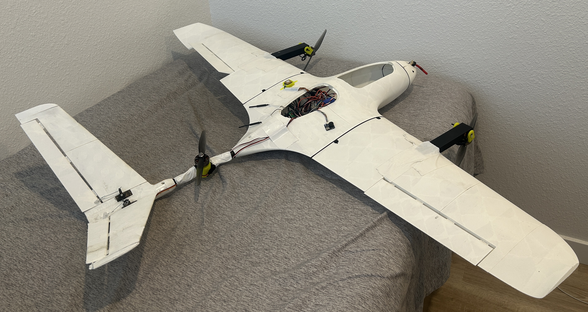
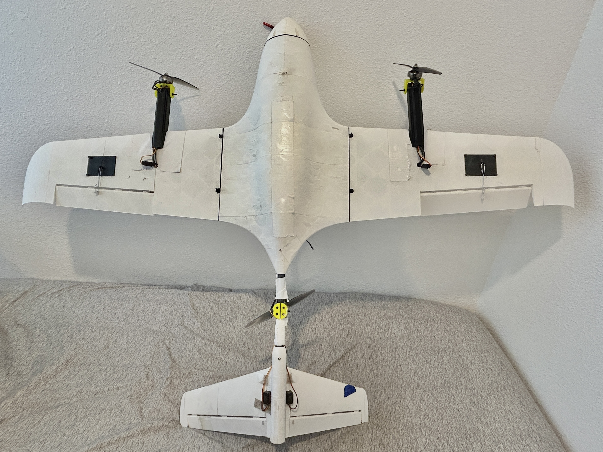

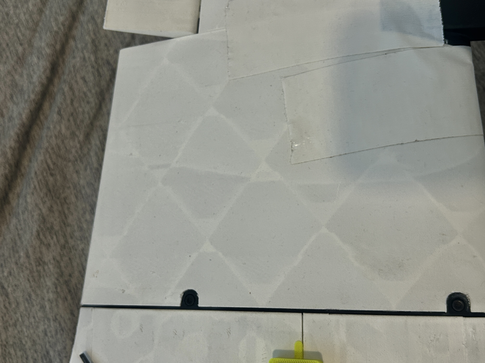
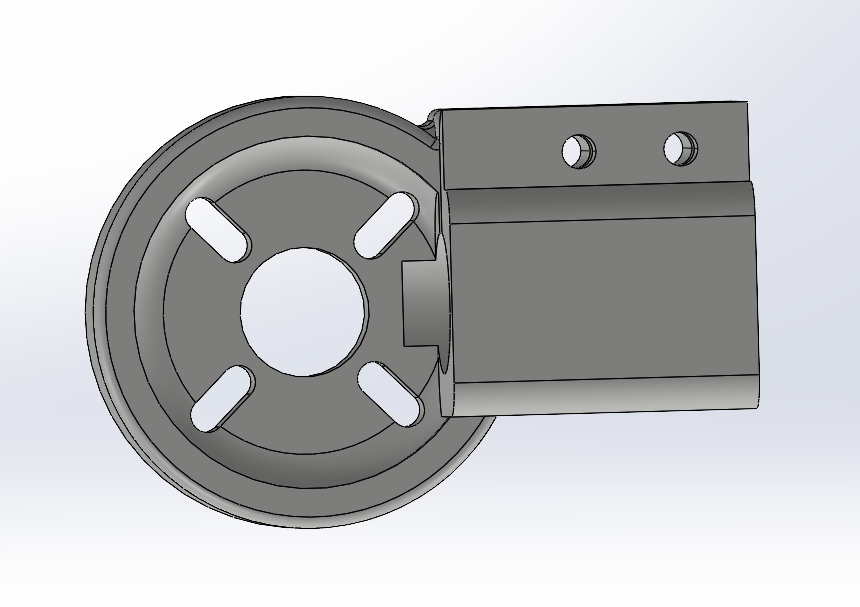
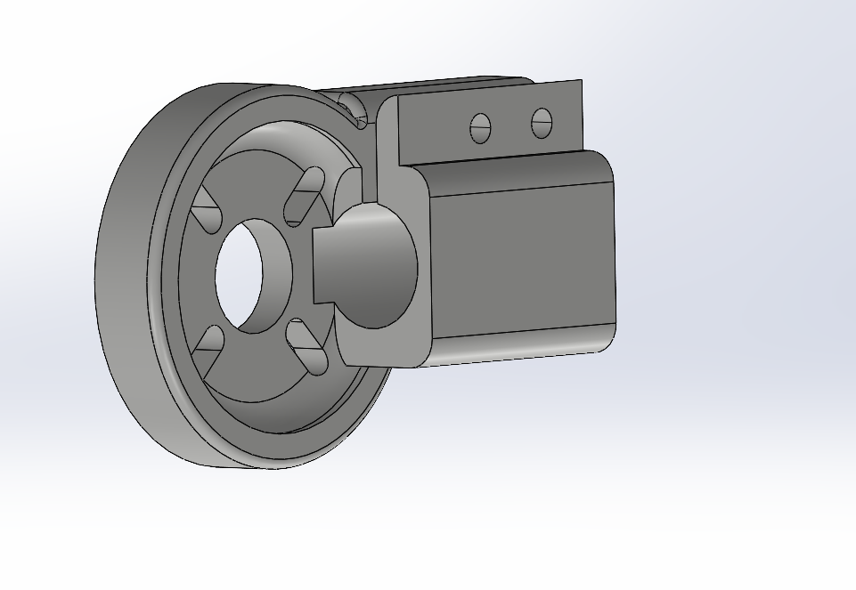
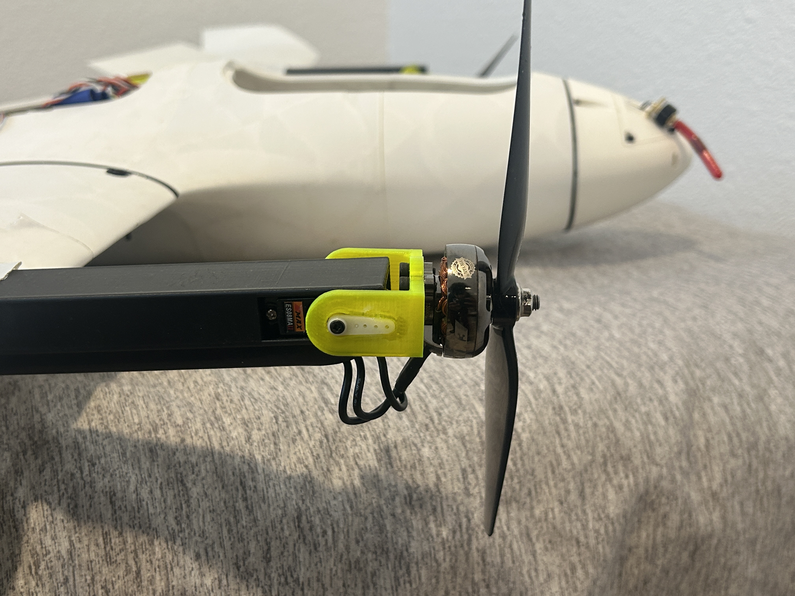
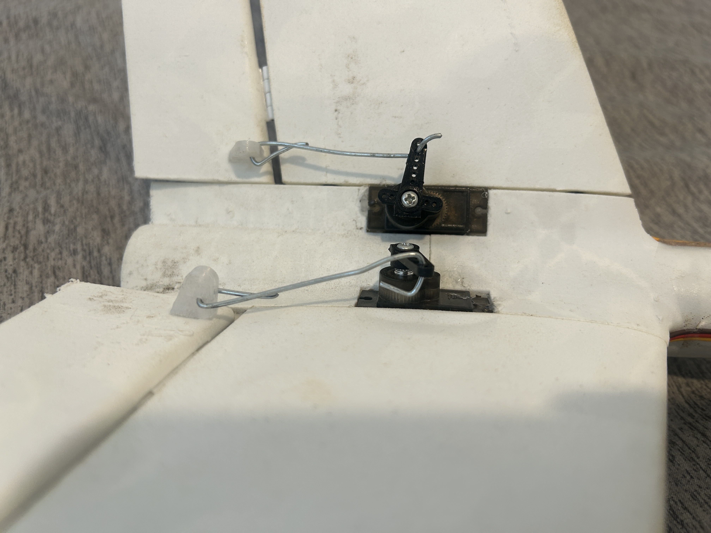
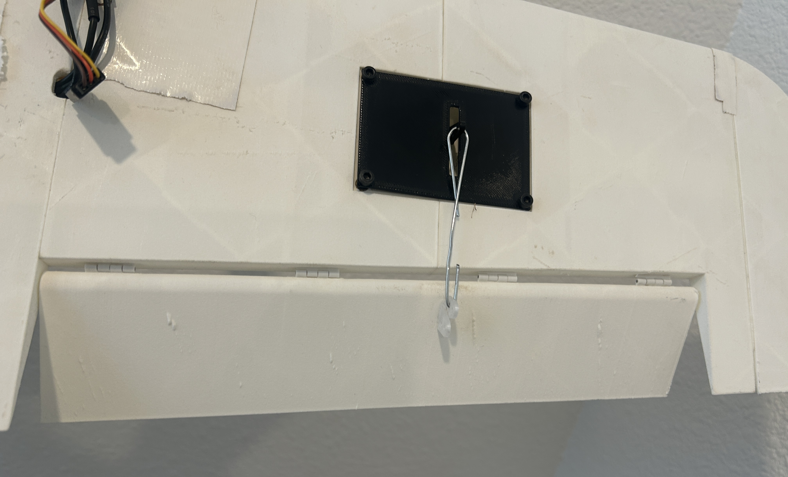
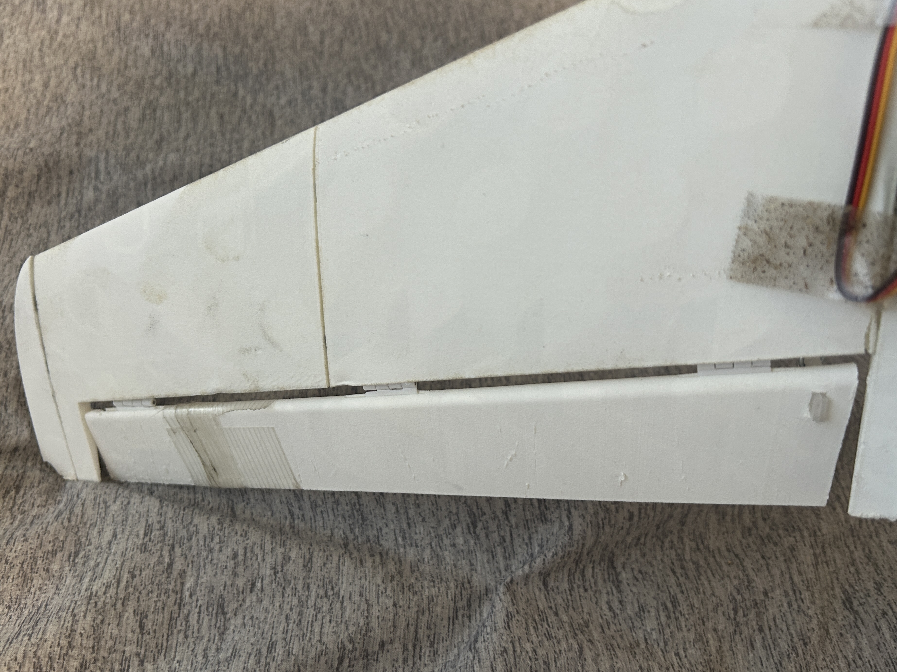